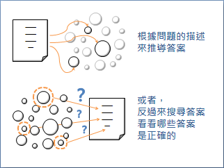
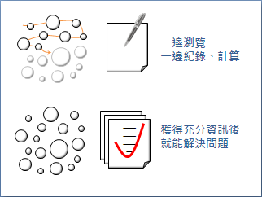
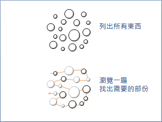
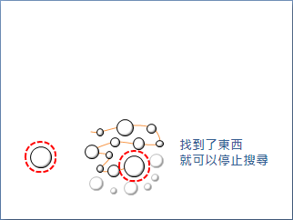
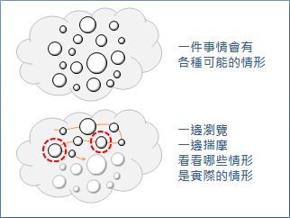

Direct Method / Trial and Error
程度★ 難度★
Direct Method（Straightforward Method）
「直接法」，可以直接算出答案來的問題，例如導個公式算出答案、觀察得到答案、依照流程進行最後得到答案、直接印出答案，這些都算是「直接法」。
UVa 488 10055 10370 10878 10929
Trial and Error（Generate and Test）
「嘗試錯誤法」、「試誤法」，是針對答案進行Enumerate與Search的策略。有些困難的問題，難以直接推導答案，既然推導不出來，就慢慢測試答案、慢慢驗算吧──確立答案的範圍，窮舉所有可能的答案，再從中搜尋正確答案。
試誤法注重的是題目的限制條件，以及答案的數值範圍，這兩者直接影響到空間複雜度與時間複雜度。問題的限制越嚴苛，答案的數值範圍越小，那麼試誤法就會越簡單越快。
直接法和試誤法一陰一陽，互為正反。直接法是由題目本身下手，進而推導出答案；試誤法則是逆向思考，從答案來下手，進而迎合題目需求。
大部分的問題，都無法直接製作出一個計算流程直接算出答案；一個問題，也不一定只有恰好一個答案，而有各式各樣的答案。這種情況下，可以採用試誤法來解決問題。
UVa 10167 10125 296 846 714
舉例：Exhaustive Key Search（Brute Force Attack）
在密碼學領域，破解密碼最簡單的方法叫做「暴力攻擊」。不知道密碼規則的情況下，就無法直接推導正確密碼；只好以試誤法一一檢驗所有可能的密碼，從中找出正確密碼。
延伸閱讀：One-way Function
「單向函數」是一種特別的函數，給定輸入很容易算出輸出，但是給定輸出卻很難算出輸入。
舉例來說，令一個函數的輸入是兩個質數，輸出是兩個質數的乘積。給定兩個質數可以輕易的在多項式時間內算出乘積，然而給定兩質數的乘積卻需要指數時間才能完成質因數分解。
如果給定一個單向函數的輸入，求其輸出，就適合用直接法，套用函數快速算得答案；如果給定一個單向函數的輸出，求其輸入，就適合用試誤法，嘗試各種輸入並套用函數快速驗證答案。
Enumerative Method
程度★ 難度★
寧可錯殺一百，不可縱放一人。《俗諺》
Enumerate
「枚舉」、「列舉」。把目標物一筆一筆列出來，一邊瀏覽，一邊紀錄、計算。把所有東西都瀏覽過一遍後，就能收集到充分的資訊，進而解決問題。
舉例：枚舉一百個平方數
以直接法的角度來看，依序枚舉數字1到100，在枚舉的過程中，一邊將數字平方得到平方數。
以試誤法的角度來看，依序枚舉數字1到∞，在枚舉的過程中，一邊判斷這些數字是不是平方數。
Search
「搜尋」。列出所有東西，瀏覽一遍，從中找出需要的部份。
實做程式時，可以一邊列出東西，一邊瀏覽，一邊判斷是不是想要的東西；也可以列出全部的東西之後，再進行瀏覽。一旦找到了、找完了所有想要的東西，搜尋就可以即刻停止。
舉例：找出數列裡的特定數字
一邊瀏覽數列，一邊尋找特定數字，一旦找到了一個，就停止搜尋。
舉例：找出數列裡的極大值
一邊瀏覽數列，一邊比較數值大小，最後就求出了極大值。
Enumerative Method
「枚舉法」、「窮舉法」、「列舉法」是Enumerate與Search兩種動作的結合，大意是：嘗試枚舉全部情形、全部數據，一一比對檢查。窮舉法的特色是，所有情況無一遺漏。
窮舉法充分利用了電腦能做快速運算的特性。窮舉對人類來說，是曠日費時的工作；對電腦來說，是駕輕就熟了。不容易揣摩出答案的問題，都可以用電腦做窮舉，迅速的揣摩各種情形，瞬間推導出正確答案。
1. 找出不確定的因素（變數）。 2. Enumerate：列出所有可能性。 3. Search：逐一判斷正確的要素（數值）。
實作窮舉法，可以用迴圈、遞迴、條列大量判斷式等等方式。
先整理再搜尋
資料有先整理的話，搜尋會變得容易又快速。
我們可以先將資料依照大小順序排序，或者先將資料置入特別的資料結構當中，讓資料具有特性；然後運用該特性，設計特別的演算法，略過不相關的資料，快速判斷出想要找的資料。例如排序後使用Binary Search，又例如將資料置入Hash Table再搜尋等等。
我們也可以直接依照資料大小進行窮舉，或者依照特殊順序進行窮舉，一邊窮舉一邊搜尋，也能達到整理的功效。
特殊的窮舉法
Backtracking 窮舉多維度的數據，以遞迴方式進行。 State Space Search 窮舉所有的狀態，並依照衍生關係整理成樹狀圖或者網狀圖，在圖上搜尋。
舉例：中途相遇法
舉例：交互前進法
UVa 972 10464
Enumerate all subsets
程度★ 難度★★★
枚舉所有子集合
http://www.applied-math.org/subset.pdf
子集合就是從一堆東西當中，挑出其中幾個。可以挑出全部，也可以什麼都不挑。
枚舉一個集合的所有子集合，即是枚舉各種不同的挑法。是解題的基本手法。
實作時，運用「Bitset」資料結構，以一個二進位數字代表一個子集合，每個位元代表每個集合元素，最低位數通常代表第一個元素，最高位數通常代表最後一個元素，0代表元素不存在，1代表元素存在。然後運用程式語言的「Bitwise Operation」語法，效率較佳。
不嫌棄的話，也可以使用「Backtracking」來枚舉。
0 1 2 3 4
U = {lemon, orange, lime, apple, banana};
43210
二進位數字01010，即是子集合 {orange, apple}
二進位數字00001，即是子集合 {lemon}
二進位數字00000，即是子集合 { }
一、以字典順序（Lexicographic Ordering）枚舉：二進位數字由小到大排列。
000 001 010 011 100 101 110 111
二、Gray Code：相鄰數字僅改動一個位元。
000 001 011 010 110 111 101 100
三、Banker's Sequence：先枚舉小集合，再枚舉大集合；同樣大小的集合們之間，先枚舉二進位數字大的（字典順序大的），再枚舉二進位數字小的（字典順序小的）。
000 100 010 001 110 101 011 111
【待補程式碼】
排容原理
UVa 10325 11806 10458
Gray Code
程度★ 難度★★★
Gray Code
有n個位元的二進位數列，頭尾相接、繞成一圈。在這個數列當中，所有相鄰的數字都只相差一個位元──可能是由1變成0，也可能是由0變成1。在這個數列當中，每一種數字只會出現一次，一樣的數字不會重複出現。
這個數列有沒有辦法窮舉出n個位元的二進位數字呢？
[n = 1] 0 1 [n = 2] 00 01 11 10 [n = 3] 000 001 011 010 110 111 101 100 [n = 4] 0000 0001 0011 0010 0110 0111 0101 0100 1100 1101 1111 1110 1010 1011 1001 1000
Incremental Method
有一個簡單的方式，可以生成其中一種Gray Code。
[n = 4] 0000 0001 0011 0010 0110 0111 0101 0100 1100 1101 1111 1110 1010 1011 1001 1000 數列的第一個數字，我們當作是第零項，是偶數項。 奇數項數字，是由上一個數字，改變最低位數而得。 偶數項數字，是由上一個數字，改變最低位的位元1而得。
位元操作是電腦的強項，程式碼可以寫的很精鍊，可參考：http://www.matrix67.com/blog/archives/266。
UVa 10455 11535
多維度的Gray Code
Gray Code還可以推廣到高維度，例如在二維的情況下，Gray Code是一個方陣，當然上下左右皆可循環。
延伸閱讀：在正N方體上散步
在N維空間的第一象限，有一個體積為1的正N方體，貼齊座標軸，靠在原點上。
現在任選一個頂點作為起點，沿邊行走，每個點都經過恰好一次，走完一圈回到起點。途中歷經的座標，就是Gray Code的順序！
延伸閱讀：河內塔（Tower of Hanoi）
河內塔的解法就是Gray Code的順序！
延伸閱讀：中國九連環（Chinese Ring Puzzle）
中國九連環的解法就是Gray Code的順序！
http://britton.disted.camosun.bc.ca/chinesering/ninering_sol.html